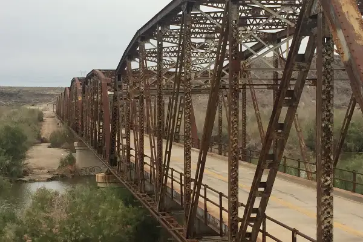

BYU-Idaho
Linkedin
☑️
Menu
Holy Grail
Media Query
Design
Hamburger Menu
BOM Top 10
Cody Marsh
Restaurants
Population
Founded
Events
Senior Pro Rodeo
Dog Days of Buckeye
Veterans Day Parade
Historic Buckeye
Gelespie Bridge

Hasayampa River
White Tank Mountains
Old Buckeye Main Street
Buckeye Old West